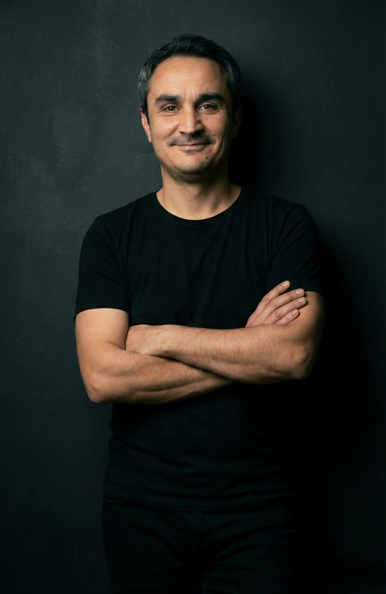

IT Manager & Software Developer
10+ years bridging IT operations, systems and software with real business workflows. Today I lead IT and claims operations at Doraglass in Aksaray, keeping servers, networks and data running across branches.

About Me
I'm a versatile IT and operations specialist. My career started in the public sector, where I spent years on IT systems, data integrity, digital archiving and technical support, including temporary assignments as an information systems manager and purchasing manager.
Since 2020 I've been the IT Manager and Motor Claims Operations Specialist at Doraglass. I keep servers, networks and databases running across branches, and I also run the automotive glass claims process, from insurer approvals and procurement through to settlement.
Along the way I trained as a software developer and build web applications with JavaScript, TypeScript and React. That mix of infrastructure, software and business operations lets me solve problems end to end, from the server room to the user's screen.
Experience
Doraglass · Aksaray, Türkiye
Udemig
Diyanet İşleri Başkanlığı
Temporary duty Representative · Kazan, Tatarstan, Russia · Jun – Jul 2015
T.C. Sağlık Bakanlığı · Başkale, Van
T.C. İçişleri Bakanlığı · Başkale, Van · YKBS
T.C. Sağlık Bakanlığı · Aksaray
Skills
Projects
Server, network and VPN/IPsec setup that connects Doraglass branches on stable, secure Linux and Windows Server environments.
Automated SQL Server backup pipelines and data handling aligned with data protection requirements.
A streamlined insurance claims and documentation process, from insurer approval to settlement, with inventory and sales tracking.
Contact
I'm always open to connecting and exploring collaborative opportunities. Send me a message.